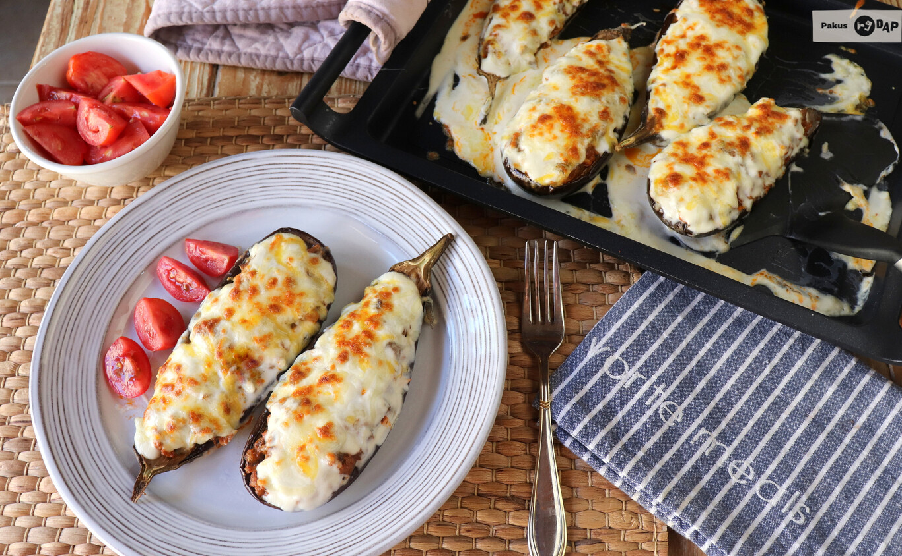

Berenjena rellena

Berenjena
Hoy quiero enseñaros mi forma de hacer este plato para que os pueda quedar tan rico como a mí
Lo primero que os recomiendo es que utilicéis berenjenas pequeñas, ya que son más sabrosas, aromáticas y tiernas. Además, apenas tienen semillas. Al ser pequeñas, podéis poner como ración las dos mitades de la berenjena para cada persona sin que resulte excesivo si las ponéis como plato único. Son un plato fabuloso que nos encanta alternar con las berenjenas rellenas de Arguiñano, en competición con la receta italiana de berenjenas a la parmesana. Y si no tenéis berenjenas, esta receta de calabacines rellenos de carne, es muy similar.
En cuanto al relleno, podéis hacer el mío en el que combino la pulpa de la berenjena con otras hortalizas y carne picada, o sustituir esos ingredientes por los de vuestra preferencia, para así dar salida a lo que tengáis en la despensa o la nevera.
Finalmente, os recomiendo que pongáis siempre un poco de salsa bechamel antes de cubrir las berenjenas con el queso para gratinar, ya que un par de cucharadas soperas de esta salsa aportan mucha cremosidad y jugosidad al plato.
Ingredientes
- 3 berenjenas rellenas
- 200g carne picada
- 1 cebolla
- 1 pimiento verde
- Salsa bechamel
- Queso rallado
- Sal y pimienta
- Salsa tomate
- Aceite de oliva virgen extra
Pasos
- Comenzamos abriendo las berenjenas por la mitad y trazando un enrejado con un cuchillo afilado. Agregamos unos granitos de sal y un poquito de aceite de oliva virgen extra y las horneamos durante 30 minutos a 180ºC en el horno. También las podéis hacer en el microondas poniéndolo a máxima potencia durante 15 minutos.
- Una vez asadas, sacamos su pulpa con una cuchara, procurando dejar intacta la piel. En una sartén freímos la cebolla y el pimiento verde picados muy pequeñitos y agregamos la carne picada. Cuando cambie de color incorporamos la pulpa de la berenjena, también muy picada y mezclamos bien.
- Añadimos la salsa de tomate casera y mezclamos, utilizando ese relleno o farsa para rellenar las berenjenas. Las colocamos sobre una fuente de hornear, cubrimos cada berenjena con dos cucharadas de salsa bechamel y repartimos por encima el queso rallado.
- Calentamos en el horno durante 10 minutos a 200ºC y después gratinamos dos o tres minutos a potencia máxima poniendo la bandeja en la parte superior del horno para que el queso, ya fundido, se dore un poco, y llevamos inmediatamente a la mesa.
- Para acompañar las berenjenas rellenas de carne y bechamel yo he utilizado una ensalada mixta o picadillo de tomates aliñados solamente con sal y buen aceite de oliva virgen extra, que sirven para refrescar entre bocado y bocado y completar muy bien este menú, que habitualmente es de plato único.
Volver a índice